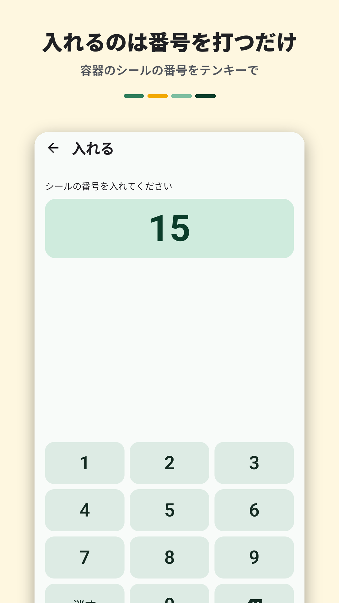
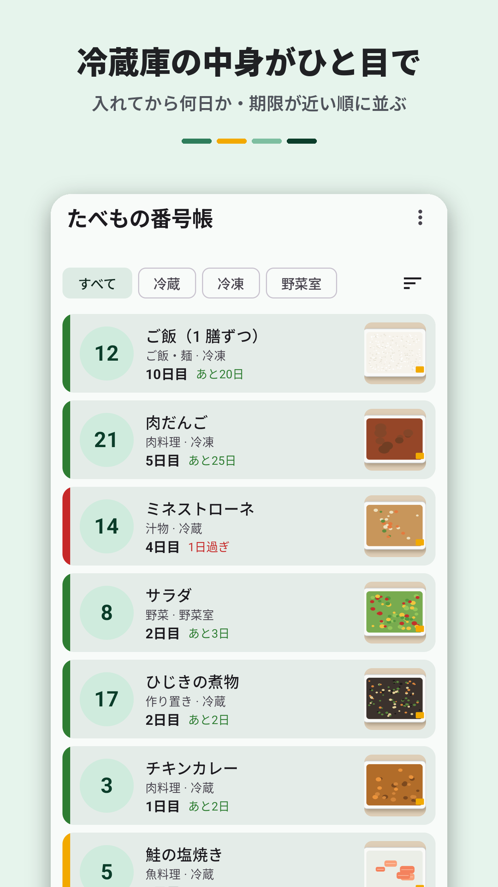

たべもの番号帳 の紹介ページへ戻る
たべもの番号帳 の使い方
たべもの番号帳（Food Tag Log）は、容器に貼った番号シールで冷蔵庫の食べ物を管理するアプリです。入れるときと出すときに番号を打つだけで、「いつ入れたか」「あと何日か」が分かります。
この説明は バージョン 0.1.0 の画面に合わせています（2026年11月22日）。画面はこれから変わることがあります。
- はじめに：番号シールを用意する
- 入れる
- 取り出す
- 一覧を見る・並べ替える
- 番号の一覧と記録
- 設定（期限の考え方・番号の範囲・種別・通知）
- 家族で共有する
- よくある質問
1. はじめに：番号シールを用意する
- 保存容器に番号を書いたシールを貼ります。食洗機や水に強いシール・テープに、油性ペンで書くのがおすすめです
- アプリを開き、通知の許可を聞かれたら「許可」を押します（期限が近い食べ物を毎日知らせるため。あとから設定でも変えられます）
- 使う番号が 1〜30 以外なら、右上の「︙」→「設定」の「番号の範囲」を直します（6.）
ひとりで使うときは、Google アカウントもインターネットも要りません。記録はこの端末の中だけに保存されます。
2. 入れる

- 一覧の下の「入れる」を押します
- 容器のシールの番号をテンキーで打ち、「次へ」を押します。「空き：○番」を押すと、空いている番号が入ります
- 「種別」（肉料理・魚料理・野菜・ご飯・麺・汁物・作り置き・その他）を選びます
- 必要なら「場所」（冷蔵・冷凍・野菜室）、「名前（任意）」、「入れた日」、「期限日も入れる」、「写真」（「撮る」か「選ぶ」）、「備考」を入れます
- 下の「保存」を押します
- 使用中の番号を打つと「○番は使用中です」と出ます。別の番号にするか、「このまま使う」を押します
- 前に入れた名前は候補に出るので、押すだけで入れられます
- 入れたあとで直すときは、一覧で食品を押して、詳細の右上の「直す」を押します
3. 取り出す
- 一覧の下の「取り出す」を押します
- 番号を打ち、「次へ」を押します
- 中身を確かめて「食べた」か「捨てた」を押します
- 押した直後に下に出る「取り消す」を押すと、元に戻せます
- 詳細の画面からも「食べた」「捨てた」で取り出せます
4. 一覧を見る・並べ替える

- 入れてから何日目か（「今日入れた」「3日目」）と、期限まで（「あと2日」「1日過ぎ」）が出ます
- 色は、期限まで余裕あり＝緑、もうすぐ＝黄、過ぎた＝赤です
- 上の「すべて・冷蔵・冷凍・野菜室」で場所を絞り込めます
- 右の並べ替えのボタンで「経過日数が長い順」「経過日数が短い順」「期限が近い順」「番号順」「種別順」を選べます
- 食品を押すと、写真と詳しい内容が出ます
5. 番号の一覧と記録
右上の「︙」から開きます。
- 番号の一覧：色の付いた番号が使用中です。押すと中身を見られます。「空き ○ / ○」で空いている数が分かります
- 記録：食べた・捨てたものの一覧です。間違えて取り出したものは、押して詳細の「取り消す」で戻せます
6. 設定
右上の「︙」→「設定」で変えられます。
| 項目 | 内容 |
|---|
| 使う人 | 「ひとりで使う（この端末だけ）」か「家族で使う（Google ドライブ）」 |
| 期限の考え方 | 「経過日数」：種別の目安の日数で期限を決めます（期限日を入れた食品はその日）。「期限日」：入れるときに期限日を入れます（入れなければ目安の日数）。「両方」：期限日と目安の日数の早いほう |
| 番号の範囲 | 使う番号を「1-50, 101-150」の形で入れます（1〜9999） |
| 種別と目安の日数 | 種別ごとに、冷蔵・冷凍で何日もつかの目安を変えられます。「種別を足す」で自分の種別も作れます |
| 期限の通知 | 毎日「通知する時刻」に、もうすぐ・過ぎた食べ物の数を知らせます |
| あなたの名前 | 家族に「入れた人」として表示されます |
| 言語 | 「自動（端末の言語）」か、12 の言語から選べます |
目安の日数は家庭での目安です。食べる前に、においや見た目も確かめてください。
7. 家族で共有する
家族それぞれの Google ドライブに記録を置き、お互いに読み合います。サーバーは使わず、無料です。右上の「︙」→「家族で共有」から始めます。
グループを作る（最初の 1 人）
- 「グループを作る（Google ドライブにつなぐ）」を押します
- Google アカウントを選び、Google ドライブの許可を押します
- 「あなたのコード」が出たら、「送る」（メール・LINE など）か「コピー」で家族に渡します。QR コードも表示されます
「Google はこのアプリを確認していません」という画面が出たときは、Google の確認がまだ終わっていないためです。「続行」を押すと先へ進めます（確認が終わると出なくなります）。
招待されたとき
- 「家族で共有」の「コード」に招待のコードを入れます（「貼り付け」か「QR を読み取る」）
- 入れる・取り出すもするときは「管理に参加する」を押し、自分の Google アカウントでドライブにつなぎます。見るだけのときは「見るだけ参加する」を押します（Google アカウントは要りません）
- 「管理に参加する」で参加したときは、画面に出る「あなたのコード」を、招待してくれた人に送り返します（返事のコード）
- 招待した人は、受け取ったコードを「返事のコードを入れる」に入れます。これでお互いの記録を読み合えるようになります
- 3 人目からは、だれか 1 人と招待・返事を交わせば、ほかのメンバーにも伝わります
- 同期は、アプリを開いたとき・一覧を下に引いたとき・入れる・取り出すのあとに行います。すぐ同期するときは上の同期のボタンを押します
- メンバーを外すときは、メンバーの一覧の「外す」を押します。やめるときは「共有をやめる」を押します（家族の記録の写しは端末から消え、ひとりで使う形に戻ります）
ご注意：コードを知っている人は、食品の一覧と写真を見られます。コードは家族など信頼できる人にだけ渡し、写真に家の中や個人の情報が写らないようにしてください。
8. よくある質問
記録はどこに保存されますか？
ひとりで使うときは、この端末の中だけです。家族で使うときは、各自の Google ドライブの「FoodTagLog」フォルダにも保存します。運営者のサーバーには何も送りません。
機種変更したら記録は引き継げますか？
家族で使う形にしておけば、新しい端末で同じグループに参加し直すと、家族の記録を読めます。ひとりで使う形の記録は、今は引き継げません。
同じ番号を 2 人が同時に使ってしまいました
一覧に「番号が重なっています」と出ます。取り出すときは、どちらを取り出すか選べます。どちらかを直して番号を変えてください。
記録を消したい
アプリを削除すると、端末の記録は消えます。家族で使っていたときは、Google ドライブの「FoodTagLog」フォルダも削除してください。Google のアクセスは Google アカウントの「サードパーティ製のアプリとサービス」から削除できます。
データの扱いを詳しく知りたい
プライバシーポリシーをご覧ください。
お問い合わせ
DNGG-studio：dngg.studio@gmail.com
本アプリは Google の公式アプリではありません。Google ドライブは Google LLC の商標です。
紹介ページへ戻る